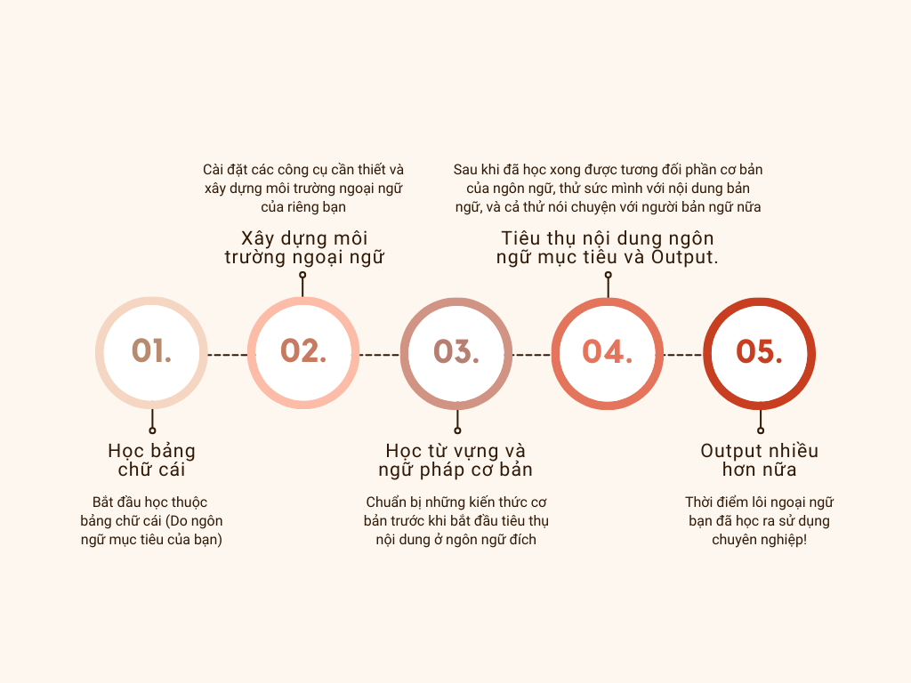

Hướng dẫn tự hoc
Nguồn
Hướng dẫn này được tổng hợp, dịch và hiệu đính lại từ: Main Guide được viết bởi Donkuri và languageguide
Chuẩn bị học¶
Cần dành bao nhiêu thời gian¶
Để đạt được trình độ cao trong một ngoại ngữ bất kì cần rất nhiều thời gian.
Nguyên tắc cơ bản là: Dành càng nhiều thời gian cho ngoại ngữ càng tốt¶
Yếu tố cốt lõi quyết định tốc độ học ngoại ngữ của bạn là thời gian. Nếu bạn muốn giỏi nhanh hơn thì hãy đặt mục tiêu là dành nhiều thời gian nhất có thể để học. Càng nhiều càng tốt. Điều này còn quan trọng hơn nhiều việc có phương pháp học tập hay những nguồn tài nguyên tốt.
Để bắt đầu xây dựng thời gian cho việc học ngoại ngữ của cá nhân bạn, bạn cần phải học hàng ngày. Lý tưởng là dành ít nhất một tiếng mỗi ngày. Sẽ không có giới hạn thời gian, bạn càng dành nhiều thời gian, bạn càng trở nên giỏi nhanh hơn.
Trong lộ trình này, phần bạn sẽ dành nhiều thời gian nhất chính là việc tiêu thụ nội dung được làm ở ngôn ngữ mục tiêu của bạn, và nó cũng có thể là thứ mà bạn muốn làm nhất trong quá trình học ngoại ngữ bởi bạn sẽ là người chọn ra thứ mà bạn muốn xem/nghe/đọc.
Lộ trình tự học ngoại ngữ¶
- Học bảng chữ cái (Do ngôn ngữ bạn chọn)
- Cài đặt công cụ + Thiết lập môi trường học.
- Học từ vựng và ngữ pháp cơ bản.
- Tiêu thụ nội dung ngôn ngữ mục tiêu + Output.
- Thực hành Output nhiều hơn nữa và tập viết.
Mình sẽ để một Flowchart ở phần này để bạn có thể theo để học ngoại ngữ. Ở mỗi giai đoạn, mình sẽ giải thích tương đối về những nhiệm vụ mà bạn cần thực hiện (Tất nhiên, tùy vào từng ngôn ngữ sẽ lại nảy sinh ra thêm nhiệm vụ mới, ví dụ như học Tiếng Trung thì bạn sẽ cần học một số lượng lớn Hán Tự). Phần hướng dẫn này sẽ tương đối ngắn và chỉ bao gồm những phần chính trong quá trình học ngoại ngữ thông qua Immersion. Nếu bạn cảm thấy chưa đủ và muốn đọc thêm để hiểu hơn về phương pháp học ngoại ngữ, bạn có thể đọc thêm các bài viết trên trang hoặc ghé trang Hướng dẫn đề xuất để đọc thêm các hướng dẫn tương tự được viết bằng Tiếng Anh (Chắc chắn tốt hơn phần mình viết hoặc dịch lại nên nếu bạn có thể đọc Tiếng Anh đừng ngại qua đọc thêm nha).

Bắt học học bảng chữ cái¶
Với một số ngôn ngữ mà không sử dụng bảng chữ cái Latin như Tiếng Việt mình, bạn cần phải học bảng chữ cái đầu tiên trước khi học bất cứ thì khác, phải biết mặt các chữ cái và cách viết của nó. Không có ngôn ngữ nào diễn tả ngôn ngữ mục tiêu tốt hơn chính ngôn ngữ mục tiêu ấy (Không ngôn ngữ nào diễn tả Tiếng Anh tốt như Tiếng Anh chẳng hạn).
Cách bắt đầu thì đơn giản là làm thao tác tìm kiếm trên Google rồi cày, bạn cũng có thể tìm một bộ thẻ trên Quizlet bất kì hoặc thậm chí có thể tạo một bộ thẻ Anki riêng cho nó. Rồi nếu có thể thì tìm Game ôn tập bảng chữ cái xem sao.
Cài đặt công cụ¶
Phần hướng dẫn cài đặt sẽ được chuyển qua các bài hướng dẫn riêng cho từng phần. Về cơ bản, bạn sẽ cần có một ứng dụng hỗ trợ hệ thống lặp lại ngắt quãng (spaced-repetition system) là Anki và một số các ứng dụng từ điển trên máy tính bao gồm Yomitan (Tiện ích trình duyệt) và Goldendict (Ứng dụng xem từ điển trên máy tính). Bạn sẽ học (ôn tập) từ vựng trên Anki thông qua những bộ deck, là một bộ thẻ ghi nhớ (flashcards) giúp bạn đưa thông tin (từ vựng, ngữ pháp .v.v.) vào bộ nhớ dài hạn.
Trước đó bạn nên hiểu một cách cơ bản về SRS hay hệ thống lặp lại ngắt quãng, bạn có thể đọc Hệ thống lặp lại ngắt quãng để tìm hiểu thêm.
Hướng dẫn cài đặt cho từng phần một:
- Hướng dẫn cài đặt và sử dụng Anki cơ bản
- Hướng dẫn cài đặt Yomitan
- Hướng dẫn cài đặt Goldendict
- Hướng dẫn Mining và chuẩn bị cài đặt cho Immersion
Tham khảo thêm:
Học từ vựng và ngữ pháp cơ bản¶
Bước đầu tiên sẽ giúp bạn chuẩn bị hành trang để bước vào lớp 1 bắt đầu tiêu thụ nội dung ngôn ngữ mục tiêu của bạn. Có một số người cho rằng nên bắt đầu thực hành Immersion từ ngày đầu tiên, nhưng cá nhân mình gợi ý bạn nên dành một vài tuần đầu học từ vựng và ngữ pháp cơ bản. Trước hết sẽ có một số hướng dẫn/gợi ý sau đây:
- Bạn không cần phải ghi nhớ hết toàn bộ tài liệu (resourcce) ngữ pháp mà bạn đang sử dụng để có thể bắt đầu immerse.
- Bạn không cần phải hoàn thành bộ thẻ từ vựng trong Anki để bắt đầu immerse, có thể bắt đầu immerse khi bạn cảm thấy bây giờ bạn có thể (Càng sớm càng tốt).
- Cách để hiểu ngữ pháp tốt nhất là có ngữ cảnh (bạn sẽ có được ngữ cảnh thông qua Immersion), và bạn vẫn nên học ngữ pháp trước khi bắt đầu Immersion
- Phần lớn các hướng dẫn ngữ pháp đều có những lỗi và vấn đề nhất định. Vì vậy, nếu bạn đọc trong một nguồn mà không thấy hiểu, thử chuyển qua các hướng dẫn ngữ pháp khác xem.
Vì đây là hướng dẫn chung cho việc học ngoại ngữ nên các hướng dẫn ngữ pháp và bộ thẻ gợi ý sẽ được mình chuyển qua bên trang Gợi ý tài nguyên học từ vựng và ngữ pháp
Tiêu thụ nội dung ngôn ngữ mục tiêu¶
Nếu bạn đã hoàn thành (hoặc gần xong) bộ thẻ từ vựng cơ bản ở ngôn ngữ mục tiêu đồng thời có một lượng hiểu ngữ pháp tương đối, chúc mừng bạn nha.
Có thể hiện tại bạn đang cảm thấy gần như không hiểu bất kì nội dung nào ở ngoại ngữ mục tiêu của mình. Điều này là hoàn toàn bình thường. Bạn vẫn chưa tiếp thụ được nhiều kiến thức về ngôn ngữ đấy nhưng bạn đã học được tương đối rồi đấy. Bây giờ là lúc bắt đầu hành trình thực sự. Bước này về cơ bản sẽ không bao giờ kết thúc vì càng tiêu thụ nội dung ngôn ngữ mục tiêu thì kĩ năng của bạn sẽ càng trở nên tốt hơn. Phần việc chính của phần này là bạn cần bắt đầu xây dựng một bộ mining deck (bộ thẻ mining). Một bộ thẻ mining là một bộ thẻ Anki bạn tự tạo mà khi thông qua các nội dung mà bạn tiêu thụ, bạn sẽ "đào" từ vựng từ câu mà bạn tiếp xúc trong lúc immerse. Việc tạo một bộ thẻ mining là một chủ đề lớn và sẽ được giải thích kĩ hơn ở bài viết . Bạn nên bắt đầu nghe ngoại ngữ càng sớm càng tốt. Bạn có thể tìm gợi ý nội dung để tiêu thụ ở trong trang Tài nguyên thông qua các hướng dẫn của Refold hoặc các trang gợi ý riêng. Tìm nội dung bạn thích, bất kì thứ gì miễn là ở ngôn ngữ mục tiêu của bạn. Ban đầu, khả năng nghe của bạn sẽ kém hơn khả năng đọc rất nhiều. Và nếu có thể, thử đi tìm người bản ngữ để thực hành output (nói, viết) cùng. Sẽ thích hơn rất nhiều và cũng sẽ giúp cho bạn có động lực học.
Ở giai đoạn này, có thể bạn sẽ muốn học thêm ngữ pháp nâng cao. Tùy vào ngôn ngữ bạn học mà có thể tìm được các hướng dẫn ngôn ngữ nâng cao. Cách mà cá nhân mình (là tác giả gốc của bài viết - donkuri) học ngữ pháp là:
- Bắt gặp một mẫu ngữ pháp lạ trong lúc đọc.
- Tìm kiếm về mẫu ngữ pháp trên mạng.
- Ghi lại mẫu ngữ pháp đấy vào một danh sách riêng của bạn hoặc chỗ nào bạn muốn.
- Ôn tập thường xuyên
Nếu bạn không ngại đọc định nghĩa ở ngôn ngữ mục tiêu của mình (đơn ngữ) thì hãy thử tìm nó bằng chính ngôn ngữ bạn học và học mẫu ngữ pháp đấy thông qua định nghĩa đơn ngữ luôn.
Output nhiều hơn nữa¶
Một khi bạn có mức hiểu tương đối tốt về ngoại ngữ và có thể đọc một cách dễ dàng hơn, đã đến lúc tập speaking với người bản ngữ thường xuyên hơn rồi. Điều này cũng tương tự cho việc tập viết (Không nhất thiết phải viết trên giấy) và có người sửa sai cho bạn. Điều này không có nghĩa là bạn không thể output từ sớm. Nếu bạn có cơ hội output từ sớm, bắt đầu luôn cũng không vấn đề gì, nhưng nhớ là cần phải Immersion song song, bởi chỉ giỏi đọc là chưa đủ để giỏi viết, và điều này cũng tương tự với việc nói, chỉ giỏi nghe là chưa đủ để giỏi nói. Tuy chưa đủ nhưng chúng là điều kiện cần để bạn có thể giỏi Output, bản thân Output không phải là cách học ngoại ngữ mà Input mới chính là học ngoại ngữ. Về phần này bạn có thể đọc câu trả lời cho câu hỏi Is it bad if I make a mistake when speaking? và bài viết Nói Tiếng Anh
Tiếp theo là gì?¶
Làm bất kì điều gì bạn muốn. Thi chứng chỉ ngoại ngữ thử xem nếu bạn muốn, đó là một cột mốc đánh dấu nỗ lực của bản thân. Bạn có thể làm bất kì điều gì bạn muốn với ngôn ngữ mục tiêu.
Danh sách nhiệm vụ¶
Những thứ bạn cần làm 1. Học bảng chữ cái 2. Hoàn thành bộ thẻ từ vựng cơ bản và một hướng dẫn ngữ pháp bất kì 3. Cài đặt các công cụ cần thiết, xây dựng môi trường học ngoại ngữ. 4. Tạo một bộ thẻ mining sau khi hoàn thành bộ thẻ từ vựng cơ bản 5. Nạp thêm thật nhiều Input 6. Thử Output với người bản ngữ của ngôn ngữ mục tiêu của bạn.